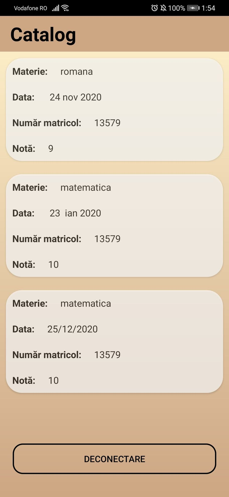
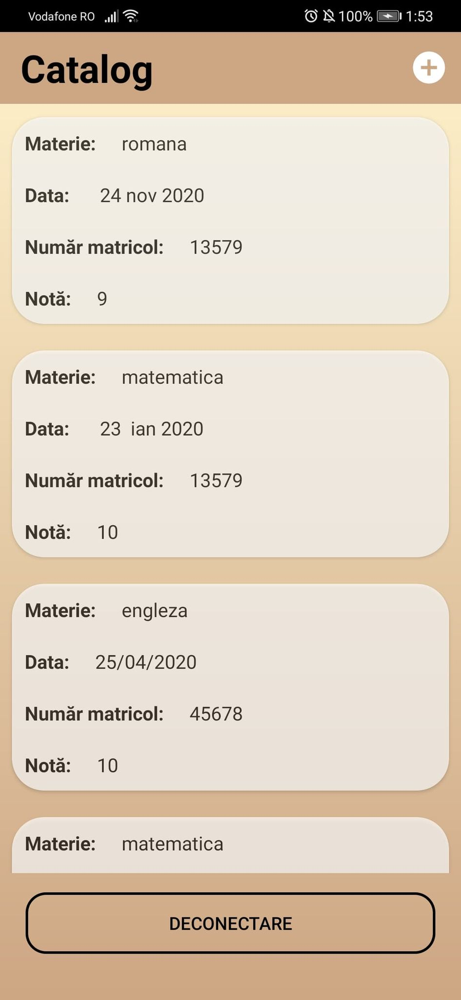
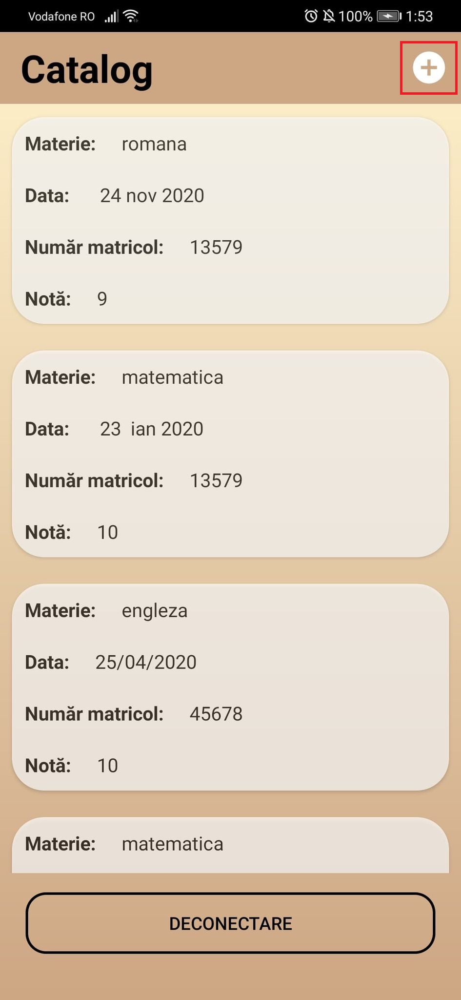
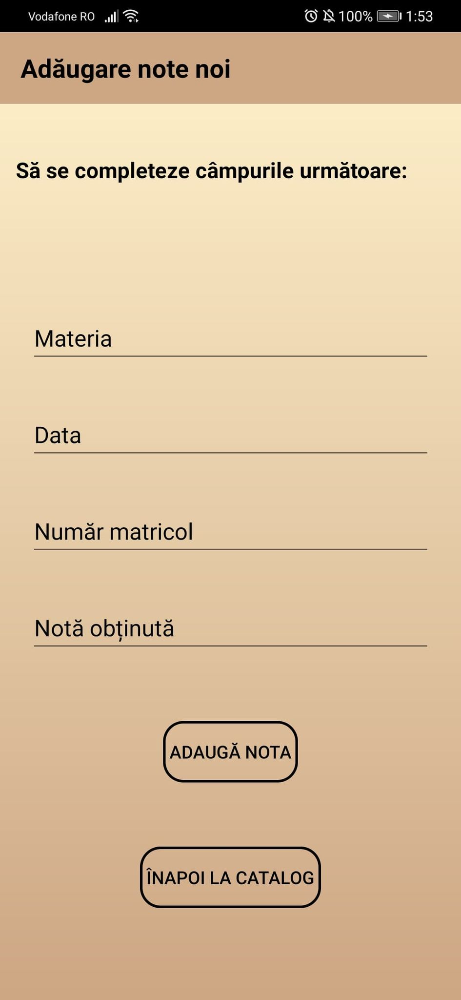

Pagina Catalog
După efectuarea procesului de Log in, utilizatorul va fi redirecționat către pagina CATALOG. Aici acesta va avea acces la următoarele informații/funcționalități, în funcție de tipul profilului:
Profil Elev și Părinte
Odată accesată pagina CATALOG, utilizatorii cu profiluri de tipurile Elev și Părinte vor putea vizualiza următoarele informații: Materia pentru care au fost adăugate notele, Data adăugării, Numărul Matricol al elevului și Nota propriu-zisă.

Pentru a face Log out din pagina Catalog, se apasă butonul "Deconectare".
Profil Profesor
Odată accesată pagina CATALOG, utilizatorii cu profiluri de tipurile Profesor vor putea vizualiza următoarele informații: Materia pentru care au fost adăugate notele, Data adăugării, Numărul Matricol al elevului și Nota propriu-zisă pentru fiecare elev.

Pentru a adăuga o nouă înregistrare, se va apăsa butonul "+" din coțul dreapta-sus.

În continuare, vor trebui completate câmpurile "Materia", "Data", "Număr matricol" și "Nota obținută".

După completarea cămpurilor, se va apăsa butonul "Adăugare Nota". Pentru a vedea efectul adăugării, se va apăsa butonul "Înapoi La Catalog".